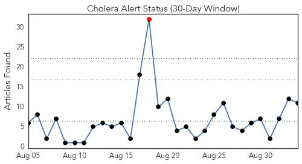
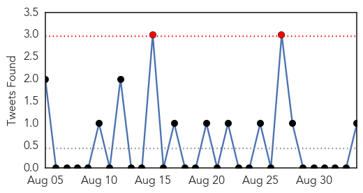
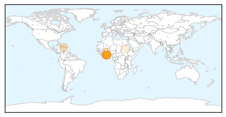
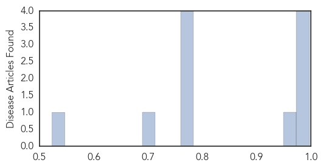

Toggle navigation
Early Warning
Daily Alerts
Cholera
Sep 03, 2014
Compare to:
-
Dengue Fever
Hemmorhagic Fever
Mold/Fungal Infection
Influenza
Meningitis
Pertussis / Whooping Cough
Middle East Respiratory Syndrome
Hepatitis
Chikungunya
Yellow Fever
Bubonic Plague
West Nile Virus
Swine Flu
Ebola
Measles
Unknown
Mumps
30 Day Trends
Web: 1
alerts
, 0
warnings
Twitter: 2
alerts
, 0
warnings
Top Articles:
0.997
Cholera uncontrollable in Ghana -
0.995
Ministry of Health donates infusions to hospitals
0.991
Haiti launches cholera vaccination campaign - Haiti
0.987
Cholera outbreak: GHS bans sale of food on streets
0.963
Gov’t releases more cholera drugs to hospitals
0.783
Mensah Guinea residents blame cholera epidemic on AMA's failure to provide waste bins
0.783
Mensah Guinea residents blame cholera epidemic on AMA's failure to provide waste bins
0.780
Early warning systems can reduce disasters -AAG
0.763
Early warning systems can reduce disasters – AAG
0.707
Food vendors defy GHS ban
0.523
UNHCR and partners distribute urgently needed aid to flooded camps in Ethiopia
Top Tweets:
0.729
Or to cholera in Haiti. MT Why is the global health community so flakey? Look at response to Aceh. To Philippines typhoon
Web/News Articles

Tweets

Article Locations

Article Confidences
